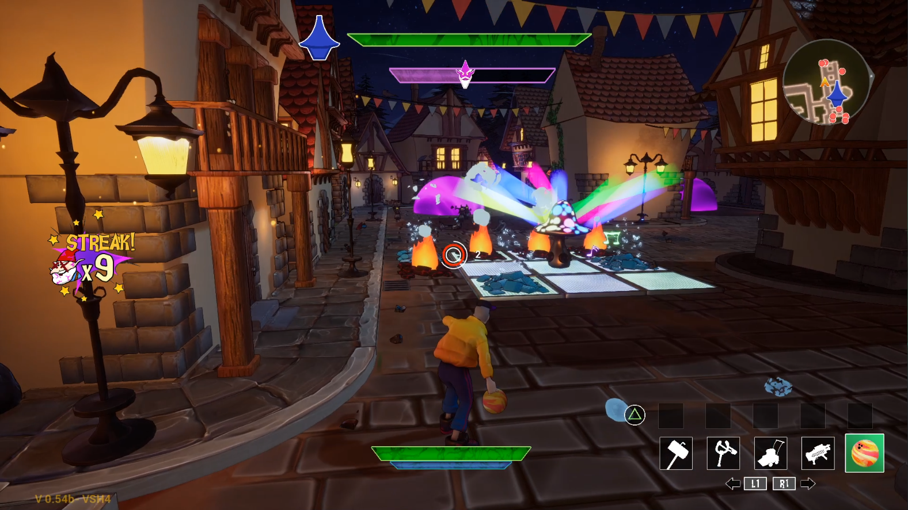

Game designer. Responsible for the game design, since the concept phase until the end of development, of 14 educational game templates. The games are published inside the Lingokids app and include puzzles, story-driven games, arcade games, logic games and creativity games, for ages 2-8. For every game I've worked on, my responsability is to design systems and mechanics, levels, and UIs, and work in a small team with an artist and a programmer to develop the game from beginning to end.
I am in charge of creating concepts from scratch, pitching ideas and sketches, and then creating high level concept documents and GDDs along with prototypes using Unity. Along with taking care of documentation, during development my role is to supervise the design and make sure the game's phylosophy is properly understood and put to work, assisting all departments when needed, along with balancing and tweaking the different systems to be appropiate for our players, until the games are published in the app. After publishing, I take part in data analysis and in designing polishing actions using said data. Throughout development, I also take part in presential user tests: preparation, attendance, and posterior analysis, extracting insights and polishing actions.
Here are some examples of games that I've worked on at Lingokids:
Bouncing Billy is an arcade game in which the player moves a spaceship in a map full of obstacles looking for letters that form a word. Level design was the key part of this development: spaces needed to be wide and being able to do backtracking easily was a must.
Photo Album is a game about exploring the surroundings of an open map to find animals and take pictures of them. Some animals are hidden, and some others appear flying, leaving only some seconds to tap on them and take their picture. The player also has a photo album in which the animal's photos can be revisited.
Wagon Catch is an arcade game conceived to approach counting to kids. Objects fall from the sky: the player's objective is to collect a certain amount of items. Powerups, boosters and punishing powerups fall too, modifying the game's behaviour when they are caught.
Tiny Tales is one of the first narrative-driven games created at Lingokids. The player's objective is to put together a story by ordering some cards sequentially. After getting them right, a narrator tells the story to the player.
Pattern Dance is a game used to teach patterns and sequences in a kid-friendly, understandable way. A character dances to a song in which some elements are repeated in a pattern, and the player needs to replicate the dance.
Artist Playground is a creativity game, an open play tool in which several brushes, backgrounds and stamps are provided to the player. This game had no concrete objectives rather than letting the players experiment and create: just providing the tools to let the players set their own goals for their drawings.
Spatial Puzzle is a puzzle game in which Tangram pieces are used to construct a figure that becomes alive after the player finishes building it properly.
Necrognomicon

Lead game designer for the master's degree project. Necrognomicon is a third-person action-tower defense game about smashing hordes of evil garden gnomes. In this project I designed every system in the game, including AI, horde manager, combat, weapons, narrative or levels, along with creating documentation and supporting all departments. Also conducted several playtesting sesions and did data analysis of the game's statistics after each session. Available on our team's itch.io page!
Gatecrasher
Game designer. Gatecrasher is a tower defense created for an university project. Use St. Peter's troops to defend heaven against the attack of several sinners! I took responsability for game design, documentation, and working hand in hand with the rest artists and programmers. Available here.
Balaclava
Game designer. Balaclava is an asymmetrical multiplayer game about robbing banks created for an university project. One of the players has to break into the bank and the other one will have access to a database with crucial information for the robbery to be successful. Together they'll have to solve puzzles, avoid guards, open safes and steal the cash! I developed the idea from scratch, creating the documentation and assisting throughout the whole development. Available here
IFO
Game & audio designer. IFO is an arcade game I designed for a game jam. Theme was "ridiculous superpowers", so we made a game about fighting alien dogs by throwing them deadly slippers and putting a super-powerful sleepwalker baby to sleep. Check it out!
Itch.io page
I've designed some more games (some of them with more people, some other on my own) using different game engines (Unity and Unreal Engine) that are entirely available on my itch.io page. Check them out here!
Tequila Works
!
about me
Hi! My name is Eva. I have been playing videogames my whole life, then later on realized that I also wanted to learn to make them from scratch. I studied video game development and majored in game design, while making personal projects and game jams.
In 2020 I started working professionally in the industry as a game designer. My focus ever since is to keep growing and putting all my passion and knowledge into creating fun, engaging and accessible experiences.
I have worked on cvarious game design areas and types of projects: from educational serious games in the mobile industry, to PC and consoles games. My main focus as a designer is being involved in gameplay, systems, combat and AI design: however, I am a flexible and open-minded person, able to adapt and to put my effort in whatever is needed to make a project move forward.
Apart from videogames, I also enjoy writing, cooking, watching tons of movies, and listening to way too many music genres.